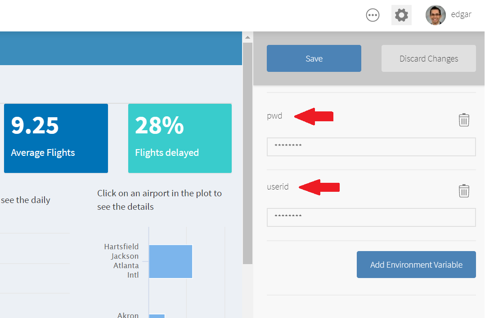

Securing Deployed Content
There are multiple ways to secure access to a database in deployed content.
The types of content that we can deploy are:
- Shiny Apps
- flexdashboards
- RMarkdown documents
The most common methods are:
Service Account
It is typical for shiny applications and R Markdown reports to provide insight from data that is not directly accessible by the content audience. In these 1-to-many cases, it is common to define service accounts that access the database on behalf of the content audience. The previous examples assumed this type of model.
Sometimes, during local development, the data scientist might be expected to use their own credentials. It is possible through a DSN or the config package to specify that local connections use the data scientist’s credentials and deployed connections use a service account. Be sure the code works for results for both accounts!
Query by User (Shiny)
Even when a service account is used, it is still possible to restrict access to data using logic inside the application code. One option is to update the query based on the logged-in user. The username is available in Shiny applications through the session$user object. For example:
library(shiny)
library(DBI)
library(odbc)
con <- dbConnect(odbc::odbc(), "Datawarehouse")
# ... rest of shiny code
server <- function(input, output, session) {
data <- reactive({
q <- "SELECT * FROM sales-data WHERE user == ?user"
query <- sqlInterpolate(con, q, user = session$user)
sqlGetQuery(con, query)
})
# ... some code that uses data()
}Prompt for Credentials (Shiny)
In Shiny it is also possible to prompt the user for their database credentials. For example:
library(shiny)
library(DBI)
library(odbc)
# ... rest of shiny code
server <- function(input, output, session) {
data <- reactive({
req(input$uid, input$pwd)
con <- dbConnect(odbc::odbc(),
Driver = "Postgres",
Server = "mydb.company.com",
Port = 5432,
Database = "sales-data",
UID = input$uid,
PWD = input$pwd,
)
data <- dbGetQuery(con, "SELECT * FROM sales")
dbDisconnect(con)
})
# ... some code that uses data()
}Run As the Logged-in User (Kerberos)
In rare cases, it may be necessary for the data to be accessed by the application or report on behalf of the specific logged-in user without prompting the user for their credentials.
This scenario is rare because it implies that each end user of the report or application has an account and access controls in the database. In other words, this model assumes a 1-to-1 model instead of the 1-to-many distribution model facilitated by a service account.
In these scenarios, it is most common to use Kerberos. RStudio Connect will need to be setup to run the application as the logged-in user. The admin guide contains more details.
Deployment of this type of content is usually straightforward because the connection code does not include any credentials, and is the same in the local and deployed context.
For example:
library(DBI)
library(odbc)
con <- dbConnect(odbc::odbc(),
Driver = "SQLServer",
Database = "Datawarehouse",
trusted_connection = "True"
)For more information on data access, see this article. In all cases, the credentials should not be stored as plain text in either the configuration file or the R code. See securing credentials for more details.
Deploying with the config Package
An alternative to relying on DSNs is to use the config package. The config package allows the connection code in R to reference an external file that defines values based on the environment. This process makes it easy to specify values to use for a connection locally and values to use after deployment.
For example:
R code:
library(DBI)
library(odbc)
library(config)
dw <- get("datawarehouse")
con <- dbConnect(
Driver = dw$driver,
Server = dw$server,
UID = dw$uid,
PWD = dw$pwd,
Port = dw$port,
Database = dw$database
)config.yml:
default:
datawarehouse:
driver: 'Postgres'
server: 'mydb-test.company.com'
uid: 'local-account'
pwd: 'my-password' // not recommended, see alternatives below
port: 5432
database: 'regional-sales-sample'
rsconnect:
datawarehouse:
driver: 'PostgresPro'
server: 'mydb-prod.company.com'
uid: 'service-account'
pwd: 'service-password' // not recommended, see alternatives below
port: 5432
database: 'regional-sales-full'The config package determines the active configuration by looking at the R_CONFIG_ACTIVE environment variable. By default, RStudio Connect sets R_CONFIG_ACTIVE to the value rsconnect. In the config file above, the default datawarehouse values would be used locally and the datawarehouse values defined in the rsconnect section would be used on RStudio Connect. Administrators can optionally customize the name of the active configuration used in Connect.
Credentials inside Environment Variables in RStudio Connect
Starting with version 1.6, RStudio Connect allows R Environment Variables to be saved at the application level. The variables are encrypted on-disk, and in-memory.
The recommended approach would be to use an .Renviron file in your local session of R, which can be used to store the credentials, and then retrieved with Sys.getenv(). Here are the steps:
- Create a new file defining the credentials:
::: {.cell indent=” “}
```{.r .cell-code}
userid = "username"
pwd = "password"
```::: 2. Save it in your home directory with the file name .Renviron. If you are asked whether you want to save a file whose name begins with a dot, say YES.
Note that by default, dot files are usually hidden. However, within RStudio, the file browser will make .Renviron visible and therefore easy to edit in the future.
Restart R. .Renviron is processed only at the start of an R session.
Retrieve the credentials using
Sys.getenv()while opening the connection: ::: {.cell indent=” “}con <- DBI::dbConnect(odbc::odbc(), Driver = "impala", Host = "database.rstudio.com", UID = Sys.getenv("userid"), PWD = Sys.getenv("pwd") ):::
Develop the app or document and deploy to RStudio Connect. Make sure to leave the
.Renvironfile out of the deployment process.In RStudio Connect, select the
{X} VarstabClick on
Add Environment Variableblue buttonCreate each the password and user ID variables
